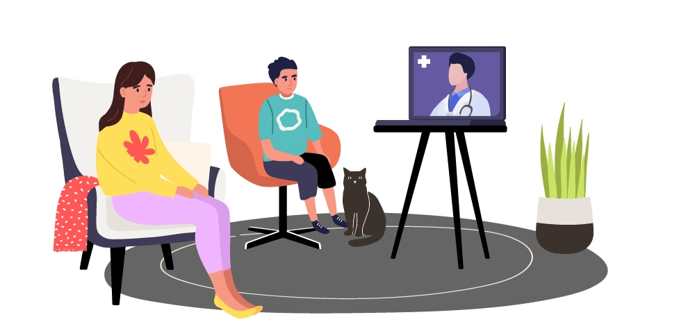

Uncontrollable movements in a part of our body that goes away as fast as they come are normal. It may catch us off guard for a while, but it disappears so fast, making it look like it never happened. However, unknowingly, that may have been a brief visit of Tics or Tic Disorder into our lives. If such visits are normal, why and when does it become a problem?
What is Tic Disorder?
Tics are either rapid body movements or spitting out unintentional words, and not being able to control them. They are fast and results in sudden jolts and throwing out sounds. It is most likely that tics appear during childhood and chances are comparatively rare when the symptoms first appear during adulthood. However, uncontrollable sudden jolts or movements can be felt by anyone at different times of their lives. It can be on your face, hands, shoulders, etc. The problem is if the tics are not so harmless and temporary. Fortunately, tics disorder takes a toll on a person’s life only when it is severe, and can be controlled with simple life changes. It is rare that it develops into a life-altering condition.
Tics sometimes last a few months, where they may pay several visits and leave after. Most of the time, after puberty, tics disappear or get controlled. Severe tic issues can mostly be seen from around the age of 8 until puberty.
Types of Tics
Based on the appearance, there are two types of Tics.
Motor Tics – Movement Based
Motor tics severity is based on whether this involves a single muscle group or a few. When it is more than one muscle, tics can be severe to a point that it looks like the movements are done on purpose. Signs of simple motor tics include,
- biting the lip
- rapid eye blinking
- wrinkling nose
- twitching of the head
- shrugging shoulders
- jerking
- clicking fingers
When motor tics get complex, tic movements can use coordinated muscle activity. During this time, signs can become a bit severe, such as,
- kicking
- banging
- jumping
- smelling things and people
Vocal Tics – Sound Based
When it is simple, vocal tics mean one simple sound that happens to come out. This does not necessarily have to make sense. They can be,
- cough like
- throat clearing
- grunts
- sniffing
- barking
- hissing
Complex vocal tics mean more meaningful words, that are almost speech-like. This can include,
- yelling
- making animal sounds
- repeating words
Disorders associated with Tics
Tic disorders variate from each other based on the type of symptoms, the period it lasts, and other criteria. Below are those types of disorders.
Provisional Tic Disorder
This is the most common form of Tic Disorder. If a person’s tics start before they turn the age of 18, and if their tics haven’t lasted for over a year, they are likely to be diagnosed with this disorder. Their symptoms are not those that appear after a certain medication, drug, or as a side effect of another illness that can cause tics. These patients should present at least one sign of motor tics or vocal tics.
Chronic Tic Disorder
With the chronic tic disorder, tics have been appearing for longer than a year. However, symptoms have to be either simple or complex vocal tics or simple/ complex motor tics. It can not be both. With persistent tick disorder, tics happen almost regularly, sometimes a few times a day. Chronic Tic Disorder is likely to start before the age of 18. This situation is less common than Provisional Tic Disorder.
Tourette Syndrome – TS
Tourette Syndrome is the most severe form of Tic Disorder. This is however a very rare disorder. To be diagnosed with Tourette Syndrome, one must showcase symptoms of both vocal tics and motor tics. Most of the time, there are more motor tics present than vocal tics. One must have had recurring tics for over a year to be diagnosed with this syndrome. Before diagnosing any of these disorders, it is important to make sure that tics do not occur as a side effect of another disease or caused by drugs or medications.
What can cause Tics?
It is not clear as to what the exact cause for Tic Disorder is. However, gene mutation and brain chemistry all play a part in it. Below are a few causes and risk factors of Tics.
- traumatic head injuries
- suffering from a stroke
- infections
- effects of a poison
- complications after a surgery
- physical injuries
- genetics – tics seem to run in families
Symptoms of early tic disorder
It is easy to identify when your tics are becoming something more than a passerby. When tics have come to your life to stay, you are likely to see the following signs.
- You may say things you don’t mean to.
- You might find yourself repeating words or sounds and being unable to control them.
- Hand or body movements that are involuntary.
- You might yell too often, and not want to.
- Eye blinking, lip biting, nose wrinkling and other simple tic signs, which are all movements you can’t control.
- The more you are in stress or anxious the worse the symptoms seem to get.
The basic idea is, experiencing any sort of physical jolting, twitch, or vocal tics which seem to return and sometimes last a while can be a sign of tics. For further clarification, it is always recommended to meet a health care provider and get a proper diagnosis.
What methods treat Tics?
Unfortunately, there is no cure for tic disorder. However, it is not always necessary to treat tics as long as they don’t affect your life so badly. It has proven that as long as stress, anxiety, and other pressuring moments are avoided, individuals with tics find their symptoms to be in good control. However, when you or a loved one is diagnosed with a more severe problem such as Tourette Syndrome, there are treatment options available to keep things more in control. Treatment for tics depends on the severity of the problem. To get started off on anything, it is important that you receive a proper diagnosis of the problem.
Therapy for Tic Disorder
Therapy has been a very effective technique when it comes to treating tic patients and helping them cope with the symptoms.
Habit Reversal Therapy
During these sessions, patients are trained into a practising movement that helps them fight against the motor tic issues, helps eliminate the tics. It is basically pushing against the pull of the tic movements.
ERP therapy
This helps your child or the patient recognize and deal with the sensations that occur right before the tics take place. By dealing with these sensations properly they can avoid the tics from occurring.
CBiT – Comprehensive Behavioral intervention therapy for Tics
These are a set of behavioral therapy techniques that helps tic patients cope with the overall disease. This process involves the following sides.
Educating the patients, parents, and caregivers can help them understand how to deal with tics. Mostly due to the fact that tic patients are children, their patients are always worried about the child’s future. Understanding the basics of the illness and how best to control it can help everyone live a quality life. It helps them understand important modifications such as how the environment should be to help the patient, what are dos and don’ts, which helps eliminate potential triggers.
CBiT also involves the practice they give to the patient when it comes to being aware of their body. The incoming sensations right before tics, how to fight them, how to fight the tics, and once the tics start progressing, how best to deal with them until they pass. This is a very important part of the training since children can be vulnerable, confused, and scared with this problematic illness.
Medication for Tic Disorder
Depending on the severity of the patient’s tic occurrences, the health care provider may or may not prescribe medications. These medications usually bring down the frequency of the tics. However, it does not completely eliminate them from happening. They act as a control technique. These medications can include,
- Medications to stop seizures
- Botox injections
- Medications to relax muscles
- Antidepressants to deal with anxiety
At any rate, it is extremely important that the patient uses these medications under a doctor’s guidance and in its recommended doses.
Ways to avoid or better cope with tics.
Tics are a problem that is easy to deal with using a few easy life tips.
Avoid stressful situations
It is a proven factor that the more you engage in stressful situations, the more it is likely to have a tic attack. Thus, try and make alterations to your life, your environment, and your daily routine in ways that minimize stress and make things easy for you.
Get enough sleep
Make sure you get a good rest before you take on the day. Every day can be a challenge to keep your mind as calm as possible. So, it is important that you take every precaution to make sure you’re going to be in a good mood and not cranky and irritable. Such situations can cause distress, making it easy for the tics to have their way with you.
Follow up on the therapy and medication
If you are advised to undergo therapy and medication, that is because your health care provider saw it necessary for your progress against tics. Therefore, make sure you do not miss your sessions and your medications. If these medications help keep your nerves calm, by missing out you may find yourself being easily annoyed and stressed. This is going to make you an obvious target for a tic attack.
On the other hand, therapy sessions teach you important factors such as how to detect a tic attack before it progresses, how to stop it before it progresses, and what you can do to minimize the impact if and after the tic attack progresses. None of us can predict how stressful the icing day can be. No amount of sleep and relaxation might be able to guard us against an upcoming terrible day. In other words, tics can hit you even when you try your best to protect yourself from them. Thus, it is always important to know how to control it when it is coming and how to minimize the effect when it has already hit you.
Join a support group
This can be especially helpful if you/ your loved one is diagnosed with Tourette Syndrome, which is the severe and life-altering version of tics. Joining a group of people to talk about their experiences, and watching them get through those as a team can be a great sort of motivation. These groups can also be very informative when it comes to ways to deal with difficulties that arise with tics. Individuals can share their experiences and how they got through them for the rest of the group t try them out too. In addition, those who are experiencing severe tic disorder can find themselves confused, hurt, and embarrassed most of the time. Support groups can make them feel like they are not alone in the struggle. This helps them maintain a positive outlook on life, and gives them people to reach out to whenever they need to.

Have a circle you can trust. Distant yourself from those that make you uncomfortable.
Avoiding stress includes cutting off people that make you feel embarrassed, hurt, or uncomfortable. Do not associate those that make you feel less or different. They are bound to cause you stress and anxiety at some point in life, and it is not with the struggle and risk. Instead, get closer to people who understand you, value you, and support you. Associate those that you can trust to have a tic attack in front of them and won’t judge you. Instead, they will help you and tolerate your behavior until you get better.
Have faith in yourself
If you have a tic, ignore it. The more you ignore it, the faster it goes away. Be so busy focusing on yourself and working for the goals that you remember you have a tic disorder These mind tricks work well with controlling this issue. Remember that tic comes and goes, and it can’t mess with your life as long as you do not let it. Do the necessary changes that you have to, in order to make your life comfortable. Be grateful to who you have and trust your process. Remember that even if it is impossible to cure tic, it is possible to deal with it so well to a point that tic has no control over your life any longer.
If you are a concerned parent or a caregiver of someone with a severe tic disorder, the following steps might help you.
Inform the teachers and others around them of their condition
This doesn’t necessarily mean embarrass your child by depriving them of a normal childhood by telling everyone he is sick. However, informing an adult in his school or in a place he hangs out of his condition can help them deal with the situation well if the child gets a tic attack during that time.
Help your child boost self-esteem and make friends
Making friends can be especially difficult for a child suffering from tic disorder. While they don’t really understand what happens to them with the tic attacks, it can also scare other kids and make your child a bully victim who might get cornered. This can severely impact their mental health and self-esteem. If things don’t go well at school, you can involve your child with a support group for children. With the familiar nature there, they are more likely to bond and make friends. In addition, make sure he or she feels loved, adored, and celebrated at all times. Appreciate every little win and make them feel worthy. It is important to make your child understand that being different is not a bad thing. Ignore their tics and make it as normal as possible. Don’t make them feel sick and weak.
Other complications associated with Tics Disorder
These signs are common mainly in children who suffer from Tourette Syndrome.
- Anxiety attacks
- ADHD
- Depression
- Autistic symptoms
- Difficulty to learn and focus
- Obsessive-Compulsive Disorder
- Speech difficulties
- Insomnia
There is a 90% chance that you are a concerned parent reading this. We hope you understand that tic disorder is a controllable disorder, and sing this information you will be able to make life better for you and your loved one.